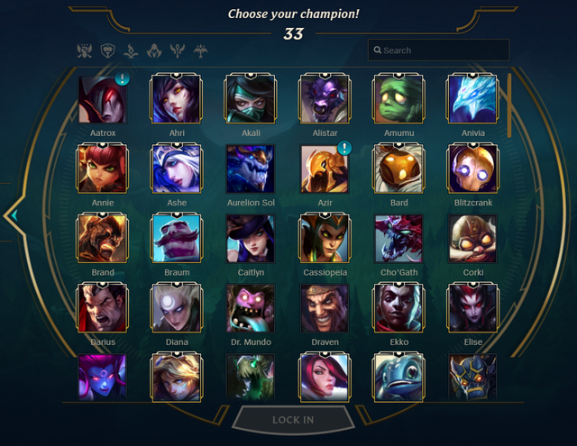

Conway's Game of Life
Recreated the zero-player game modelling a cellular automaton known as Conway's Game of Life, with various starting boards and evolution strategies
to create different effects and animations. Also created a custom version with different game rules and evolution strategies in order to model a disease outbreak.
Link Here
Perfect Pitch
Due to the COVID-19 remote learning situation, I was having difficulty getting the same level of engagement from my music students online. I created this mobile
game app for Android in order to reinforce some learning that was lost in Zoom rooms. It is an audio-based chord guessing game designed to help students gain
a better sense of harmony and develop their perfect pitch. My app is available for download on the Google Play Store and my students are using it weekly.
Link Here
BCS Degree Checker
Created a Java application where user can add their courses in-progress or completed and run degree promotion and graduation checks specific to UBC's
BCS (Bachelor of Computer Science) degree. Added a data persistence feature where a user can save/load the application as with JSON data to/from file.
Project written in Java, tested using JUnit with a functioning GUI.
Link Here
Gym 18
Designed and implemented a database system to model the inner workings of a fitness gym. Created a Java application providing access to a custom databased
(hosted on UBC servers) with multiple functions through the GUI: registering accounts, booking trainer sessions, creating/following diet plans, etc. Allowed
for different user types with varying levels of accessibility and functionality: master account, gym user, gym trainer.
Link Here
Mood Calendar
A pandemic-inspired project, an iOS app to allow a user to track their mood/mental health throughout the week. Each day the user ranks their mood out of 5, which is recorded and then displayed
in a custom week-view. The data is reset every Sunday for the new week.
Link Here
League Champ Predictor
A classification model to predict which League of Legends champion to play that has the highest chance of victory. Predicting features based on player's position,
teammates selections and enemy team. Created a GUI for easier use of application while League client is running. Created a workflow to fetch match history data, clean and
format data, build model, tune for hyperparameters and deploy. Prediction accuracy ~20% BUT winrate with predicted champions ~90%.
Link Here
Technologies Used
- Python
- RiotAPI
- pandas
- scikit-learn
- tkinter
